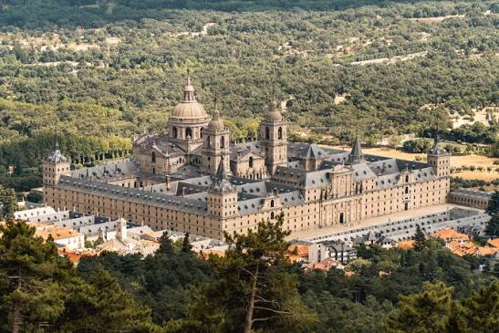

El Escorial es un complejo arquitectónico ubicado en la ciudad de Madrid, España. Es uno de los monumentos históricos más importantes del país.
El Escorial fue construido en el siglo XVI por orden del rey Felipe II y se utilizó como monasterio, palacio real y panteón de los reyes de España. Su arquitectura combina elementos renacentistas y herrerianos, y es considerado un ejemplo destacado del estilo arquitectónico español.
El complejo incluye un monasterio, una basílica, un palacio, una biblioteca y un panteón real. La basílica alberga importantes obras de arte y es conocida por su impresionante cúpula. La biblioteca del Escorial es famosa por su colección de libros antiguos y manuscritos.
El Escorial ha sido declarado Patrimonio de la Humanidad por la UNESCO y es un importante destino turístico en España. Su historia, arquitectura y valor cultural lo convierten en un lugar de gran relevancia histórica.
Si deseas obtener más información sobre El Escorial, puedes visitar el sitio web oficial del Patrimonio Nacional de España: Patrimonio Nacional - El Escorial.
